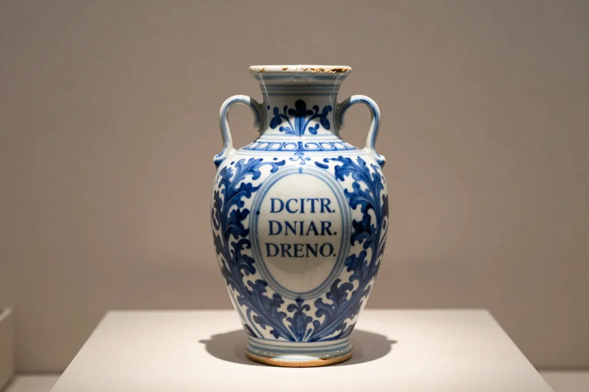

ceramics · 1450–1750 · also: Pharmacy jars, Maiolica drug jars, Vasi da farmacia
Tin-glazed earthenware jars and jugs that Italian potters made for the shelf of the pharmacy. The waisted albarello holds dry drugs, and the label names the drug in a painted cartouche.

Core thesis
A drug jar must tell a clerk which drug it holds, so the label is part of the pot: a painted cartouche on a clean white tin glaze.
Design principles
Throw a waisted cylinder with a flared lip and foot, so that a hand holds it and a cord ties on a parchment lid.
Make the height 15 to 30 cm and the width a little more than half of the height.
Cover the whole pot with an opaque white tin glaze about 0.5 mm thick.
Paint a cartouche or a scroll on the front, and write the name of the drug in it in Latin.
Paint blue on the raw glaze with cobalt; add manganese purple, copper green and ochre in polychrome work.
Paint a foliage ground, the "oak-leaf" or "peacock-feather" pattern, round the label.
Give a syrup jar a spout and a strap handle, and a bottle a long neck with a flat mouth.